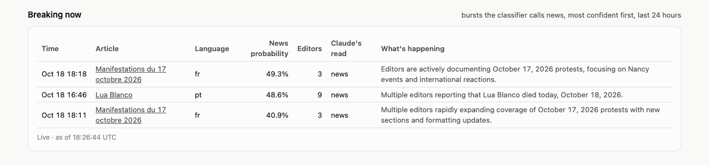
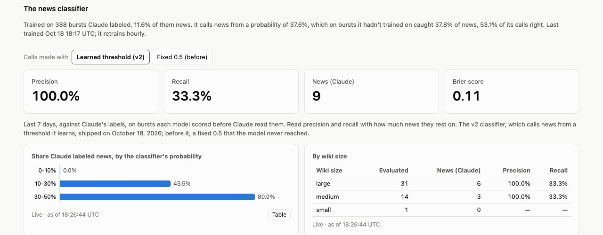

I'm an L6 Business Intelligence Engineer at Amazon Web Services, leading the team that owns the end-to-end analytics stack, from ingestion to presentation, for a global infrastructure development organization. In the past year, the value of data insights has transformed, and so have the platforms we build on and the roles I play, whether I'm wearing the hat of a data engineer, an analytics engineer or a data scientist.
The biggest change has been the move from AI-assisted to AI-first development. In mid-2025, AI tools helped me stand up platform resources, structure ingests from APIs and write repetitive code, but they fell short on advanced SQL and on charts and dashboards that explain an analysis elegantly. Anthropic's latest models, like Claude Opus 5.5, now handle even those surprisingly well.
There's still an important role for data professionals; it has just shifted. Instead of writing complicated SQL, chasing data quality issues, tuning hyperparameters and dragging fields into dashboard wells, we build scalable solutions for metric consistency, translate data into business meaning, and invent new approaches.
This paper presents a platform I built for that shift: Agentic Lakehouse, an AI-first package that streams live data and keeps its history, queryable together through one gateway, on a foundation of semantic models, an ontology and a drift agent. I walk through each component with wiki-pulse, a working example that streams and classifies every edit to Wikipedia.
The Agentic Lakehouse Platform
Agentic Lakehouse is an end-to-end, AI-first platform for live data. Point it at any event stream, and it ingests the stream, stores it, and serves governed metrics to dashboards, pipelines, models and AI agents from one place. The platform has five key strengths.
End-to-end platform that seamlessly combines live and historical data. Events flow through Kafka into Apache Pinot for second-by-second freshness and into Apache Iceberg for full history. One query spans both: a router splits the time range across the two tiers and merges the answer, so a seven-day metric is current to the second, with nothing counted twice.
AI-first semantic layer with a side-by-side ontology for MCP context. Every metric and business rule is defined once, in YAML and SQL macros written in DuckDB's dialect, and translated into Pinot SQL for live data and Trino SQL for history, so it answers the same on both. Each definition carries its plain-language meaning, served to AI agents over MCP, so an agent knows what a metric means before it queries it.
Built-in drift agent. When producers add a field, drop one or send a new category, the drift agent catches it within the hour and has Claude propose a reviewable patch to the semantic layer, so definitions don't go stale unnoticed.
Lightweight design, including the DAG. A project is mostly configuration: wiki-pulse is 593 lines of Python and 33 config files. Pipeline steps declare the tables they read, and the platform derives the DAG from those reads, so there's no orchestration code to maintain. Even ML models are steps, versioned as ordinary tables.
AI dashboard development. I didn't set out to build an AI dashboard framework, but the design produced one. Dashboards are plain HTML chart tags over named views, with labels and formats from the ontology, so an agent can build, check and screenshot one from a sentence. I believe this is the future of BI development.
The next sections walk through each piece on wiki-pulse.
Platform Components in wiki-pulse
Live and history in one query
In wiki-pulse, every edit to every Wikipedia, about three a second across 327 language editions, streams through Kafka into Apache Pinot, which keeps the last two days ready to query to the second. Every five minutes the platform also flushes those events into Apache Iceberg, exactly once, to keep the full history. When a question comes in, the gateway's router sends recent time ranges to Pinot and older ones to Iceberg through Trino, and when a range spans both, it splits the query, runs each part on its own tier and merges the results, so a question like edits over the last seven days comes back complete and current to the second without counting anything twice.
That combined result is available everywhere the data gets used. I can explore it ad hoc from a query engine like DuckDB in DBeaver, writing plain SQL against the models as if live and historical data were one table. The same queries, saved as named views, feed the dashboards directly and refresh as new edits arrive, and AI agents retrieve the same results through the gateway's MCP server, so a person, a dashboard and an agent asking the same question always get the same answer.
Unified Semantic Layer With Ontology
At the center of the platform is a semantic layer where every metric, dimension and business rule is defined once. The definitions are written once, in YAML and dbt-like Jinja SQL templates using DuckDB's SQL dialect, and the platform translates them into Pinot SQL for the live tier and Trino SQL for history, so the same definition answers on both. Every definition is checked when the configuration loads, so a broken one fails right away instead of in someone's query. In wiki-pulse, a single macro decides whether an edit came from a bot, an anonymous editor or a registered account, and every model, view, rollup and dashboard that needs that answer calls the same macro.
# a metric, with the description agents read over MCP
- name: revert_share
description: Share of edits that undo another edit.
High means disputes or vandalism being cleaned up.
type: ratio
numerator: revert_edits
denominator: edit_count
format: percent
{# Who made an edit, broadly: a bot, someone anonymous
(an IP address or a temporary account), or a
registered editor. #}
{% macro editor_type() %}
CASE WHEN is_bot = true THEN 'bot'
WHEN is_anonymous = true THEN 'anonymous'
ELSE 'registered' END
{% endmacro %}SELECT CASE WHEN "is_bot" = TRUE THEN 'bot' … END
AS "editor_type",
CAST(COUNT(*) FILTER (WHERE "is_revert" = TRUE)
AS DOUBLE) / NULLIF(COUNT(*), 0) AS "revert_share"
FROM edits
WHERE "event_ts" >= 1792324800000
AND "event_ts" < 1792328400000
GROUP BY …SELECT CASE WHEN is_bot = TRUE THEN 'bot' … END
AS "editor_type",
CAST(COUNT(*) FILTER (WHERE is_revert = TRUE)
AS DOUBLE) / NULLIF(COUNT(*), 0) AS "revert_share"
FROM iceberg.raw.edits
WHERE event_ts >= TIMESTAMP '2026-10-18 12:00:00'
AND event_ts < TIMESTAMP '2026-10-18 13:00:00'
GROUP BY …What makes the layer AI-first is that the ontology sits side by side with those definitions. Every metric and dimension carries its label, its format and a plain-language description of what it means, and every macro has its description written directly above it, so the meaning always travels with the logic. The gateway itself is an MCP server, and when an agent asks it for the metrics it can use, it gets back every metric, dimension and macro along with what each one means and how far its data reaches. That context lets an agent work from the same definitions people do, instead of guessing at column names or writing business logic of its own.
Drift Agent
Data rarely stays the shape it was in when the semantic layer was written. Producers add fields, stop sending others or start sending new categories, and the definitions built on top of that data can quietly drift out of step with it. The drift agent runs every hour, comparing the last day of data with the week before and with the semantic layer itself, and it looks for exactly that kind of drift: a new field no definition describes, a field a metric depends on going quiet, or a new value that a definition's filters or logic don't account for.
When it finds drift, it gives Claude the signals, sample rows and the definitions involved, and Claude proposes updated semantic definitions, new or revised macros, dimensions and metrics, written to hold for all of history on both tiers. Before anything reaches me, the platform checks that the updated configuration loads, that each new or changed definition runs on the sample data and that every dashboard still works, then saves the proposal as a patch I can review and apply. In wiki-pulse, when Wikimedia started flagging temporary accounts in October 2026, the agent proposed a new macro, dimension and metric for them, and they went live as proposed, once my review turned up an engine bug that the next release fixed.
+ {# An edit made from a Wikimedia temporary account: an automatically created account
+ named ~... for editors who aren't logged in, counted as anonymous. Uses the
+ is_temporary flag where producers send it (from around October 2026). For older
+ rows it falls back to the editor name starting with '~'. #}
+ {% macro temporary_account_edit() %}coalesce(is_temporary, editor LIKE '~%'){% endmacro %}
+ - name: temporary_account_edits
+ description: Edits made from temporary accounts (named ~...), a subset of anonymous
+ edits. The other anonymous edits come from IP addresses. …
+ agg: count
+ filters: ["{{ temporary_account_edit() }}"]AI-first dashboards and agents
Dashboards in the platform are plain HTML pages with a handful of chart tags, each pointing at a named view and the columns to draw. Labels, number formats and descriptions all come from the ontology, so a dashboard never redefines a metric, and every chart stays live, redrawing as new data arrives. Because the same MCP server that answers questions also lets an agent list the metrics and views, write a new view, build a page, check it for problems and screenshot it to review its own work, an agent can take a dashboard from a short request to a finished page.
SELECT date_trunc('minute', event_ts) AS flagged_at,
url, language, news_probability, peak_editors,
reading, explanation
FROM trends
WHERE event_ts >= now() - INTERVAL :hours HOUR
AND classifier_says = 'news'
ORDER BY news_probability DESC<h2>Breaking now</h2>
<al-table view="bursts_breaking"
columns="flagged_at,url,language,
news_probability,peak_editors,
reading,explanation">
</al-table>
The Bursts dashboard in wiki-pulse was built that way. Its Breaking now panel, which lists the bursts the classifier calls news, and its panel judging the classifier against Claude's labels each started as a short request and became a new SQL view and a few chart tags, checked and screenshotted by the agent before I reviewed them. For me, this is where AI-first BI gets exciting, since the work shifts from dragging fields into dashboard wells to deciding which questions are worth answering.
ML Classifier in the Pipeline
The burst detector in wiki-pulse flags articles that are getting far more edits than usual, and Claude reads each fresh burst and labels it as news, an edit war or routine work, along with a sentence about what's happening. To score every burst instantly and at no cost, a pipeline step retrains a logistic regression on Claude's labels every hour and writes the model's weights to an Iceberg table, which the detector reloads and applies to each burst as it streams in. Since the model is just another table in the lakehouse, it's versioned, quality-gated and queryable like any other data, and its evaluation is a semantic model too, so its precision and recall against Claude's labels show up on the dashboard as governed metrics.

That evaluation is also what made the classifier better. The first version looked 87% accurate, but only because it never called anything news, so I ran a study comparing logistic regression with XGBoost under cross-validation that kept each story's flags together, and then shipped a second version with stronger features and a threshold it learns on its own. The full study is linked at the end for anyone who wants the details.
The Future of BI
When I started building Agentic Lakehouse, I wanted to see what business intelligence could look like if it were designed AI-first from the ground up, instead of adding AI to the tools we already have. What I found is that the things we've always cared about, consistent metrics, trustworthy data and clear insights, become far more achievable when the platform itself carries the meaning of the data, keeps that meaning current as the data changes, and lets people and agents work from the same definitions.
That's why I think this is such an exciting time to work in BI. We have a real opportunity to transform our architecture, our platforms and the way we deliver insights, all at the same time. As AI takes on more of the tedious work, we get to focus on the most valuable part of the job, which is deciding what matters, defining it well and turning data into better decisions. I can't wait to see where we take it.
Links
- Agentic Lakehousethe platform: engine, gateway, semantic layer and drift agent
- wiki-pulsethe working example, built on the platform
- The classifier studylogistic regression against XGBoost, and which features help
- Jeffrey Van Anderson on LinkedIncontact